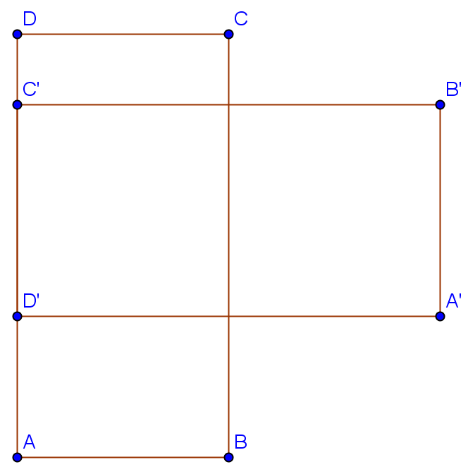

Aufgabe 3.3
Durch welche Drehung wurde das Rechteck $ABCD$ auf das Rechteck $A'B'C'D'$ abgebildet? Konstruieren Sie das Zentrum der Drehung und geben Sie den Drehwinkel an.

- Das Drehzentrum hat von entsprechenden Punkten gleichen Abstand
- Nutzen Sie die Mittelsenkrechten von Verbindungsstrecken
- Der Schnittpunkt zweier Mittelsenkrechten ist das gesuchte Zentrum
- Der Drehwinkel kann aus dem Winkel zwischen entsprechenden Strecken bestimmt werden
Konstruktion des Drehzentrums:
Schritt 1: Verbindungsstrecken zeichnen
- Zeichne die Strecken $\overline{AA'}$, $\overline{BB'}$, $\overline{CC'}$ und $\overline{DD'}$
Schritt 2: Mittelsenkrechten konstruieren
- Konstruiere die Mittelsenkrechte von $\overline{AA'}$
- Konstruiere die Mittelsenkrechte von $\overline{BB'}$
Schritt 3: Drehzentrum bestimmen
- Der Schnittpunkt $Z$ der beiden Mittelsenkrechten ist das Drehzentrum
- Begründung: $Z$ hat von $A$ und $A'$ sowie von $B$ und $B'$ gleichen Abstand
Schritt 4: Drehwinkel bestimmen
- Zeichne die Strecken $\overline{ZA}$ und $\overline{ZA'}$
- Der Winkel $\angle AZA'$ ist der gesuchte Drehwinkel
- Alternative: Messe den Winkel zwischen $\overline{AB}$ und $\overline{A'B'}$
Kontrolle:
- Prüfen Sie: Liegen $C'$ und $D'$ auf den Kreisen um $Z$ durch $C$ bzw. $D$?
- Stimmt der Drehwinkel für alle Punktpaare überein?
Im Video: Etappe 4 · Schultypische Beispiele bei 6:20